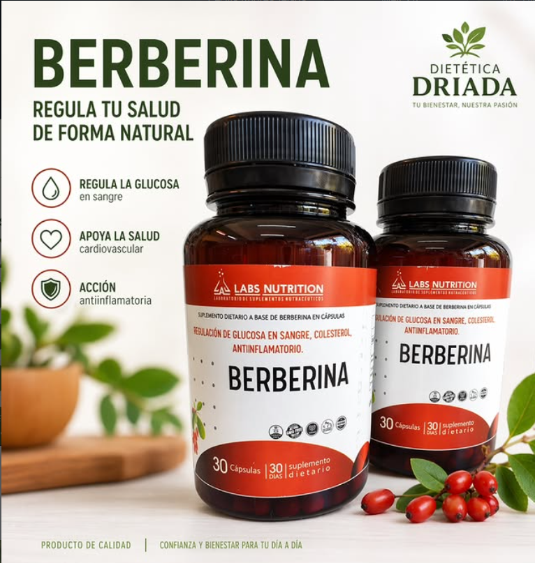
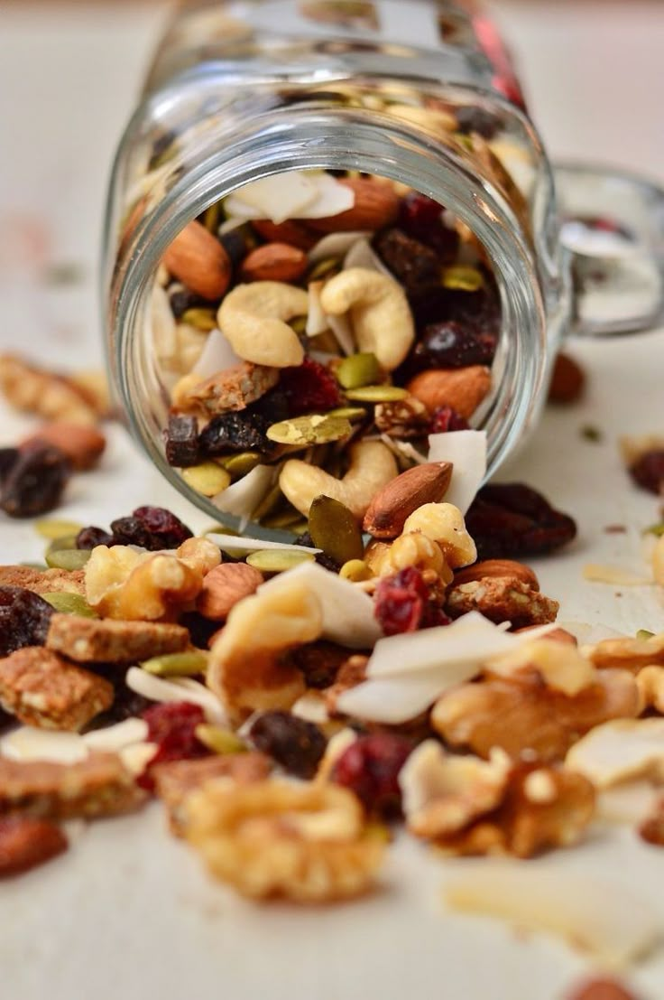
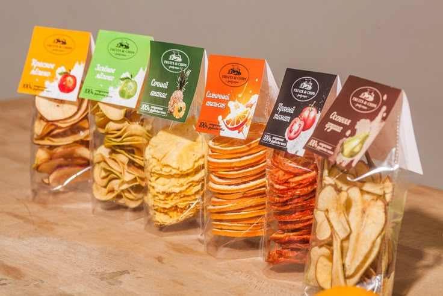
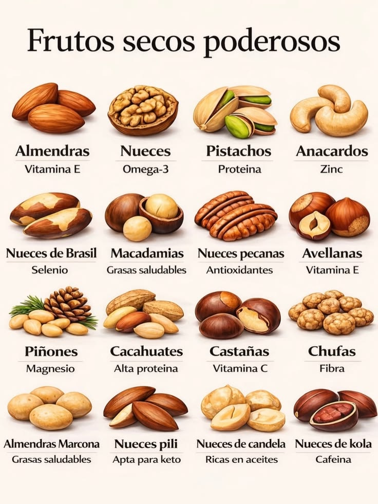
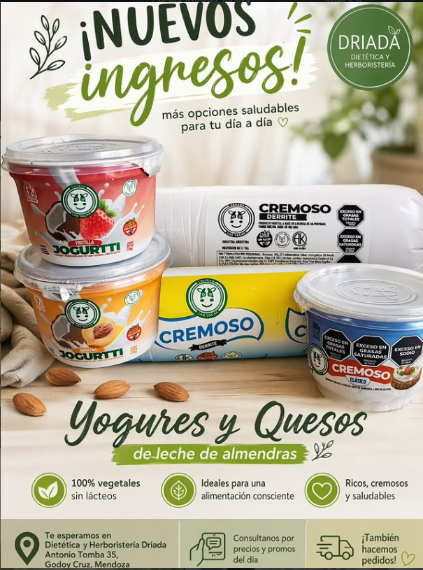
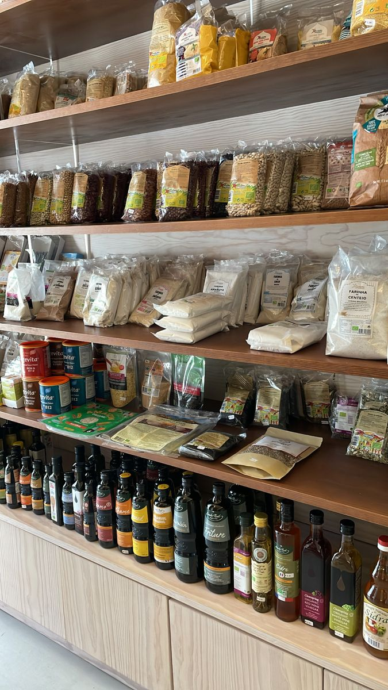

Productos naturales y orgánicos que cuidan tu salud y el medio ambiente.

Frutos secos, cereales y suplementos para mantener tu cuerpo activo y equilibrado.

Yogures y quesos sin lácteos, ideales para dietas veganas o intolerancias.

Frutos secos, cereales y suplementos para mantener tu cuerpo activo y equilibrado.
